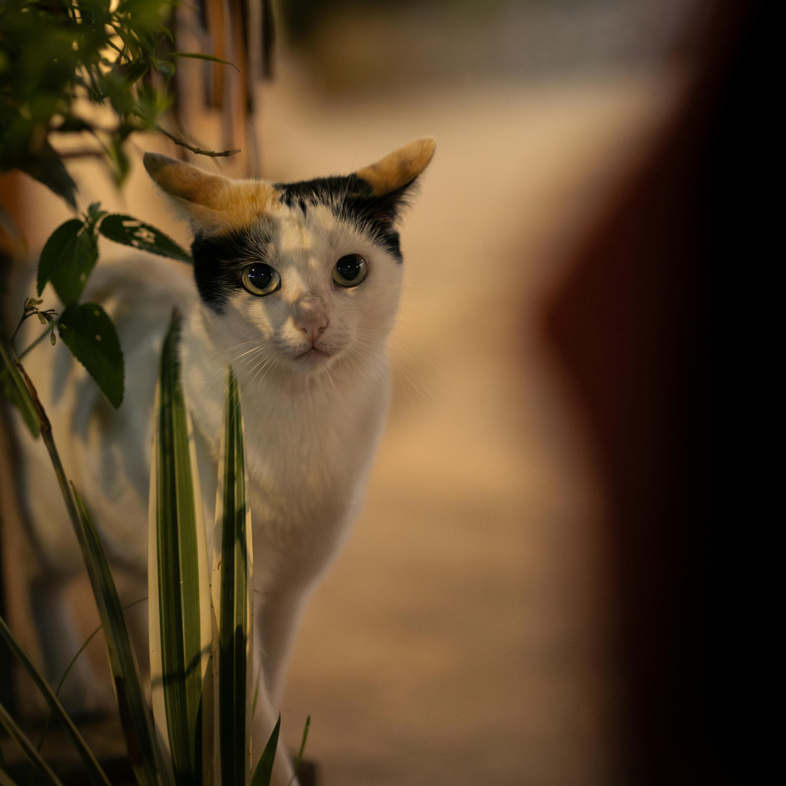

This is a Calico cat. Features include: white coat with yellow and black areas.

This is a Maine Coon cat. Features include: fluffy coat with long hair.

This is a Bombay cat. Features include: sleek, black coat and yellowish eyes.

This is a Persian cat. Features include: short tail, flat face, and short hair.